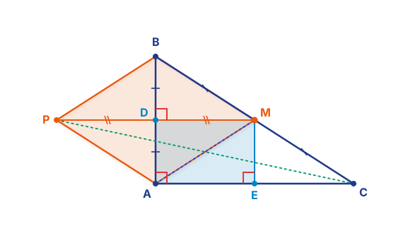
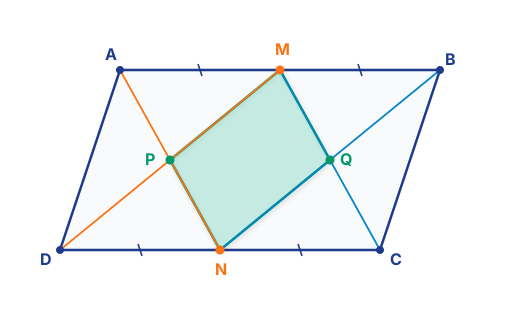
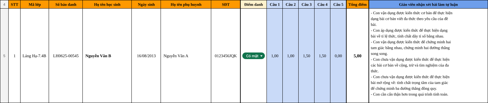

TUẦN 10 - 11 | HỌP GIÁO VIÊN KHỐI 8 (14/09 - 20/09/2026)
HỌP CHUYÊN MÔN GIÁO VIÊN KHỐI 8
NĂM HỌC 2026 - 2027
NĂM HỌC 2026 - 2027
Rà soát bao quát lớp, phân bổ thời gian, tương tác học sinh, quy chuẩn file bài học và kỷ luật tác phong.
Theo dõi tiến độ Khối 8: Đã hoàn thành Buổi 9 (Hình chữ nhật); trọng tâm thời gian tới: Buổi 11, Kiểm tra Quý I (Tuần 12) & Tháng 10.
Hình học: Hình thoi - Hình vuông & Ôn tập Tứ giác; Đại số: Phân tích đa thức nâng cao & Chuyên đề Chia hết số nguyên.
Kế hoạch khảo sát định kỳ Quý 1 Tuần 12, quy chế chấm bài nghiêm túc $n+2$, hướng dẫn nhập điểm & nhận xét chuẩn.
Trao đổi cởi mở, giải đáp thắc mắc chuyên môn, chia sẻ kinh nghiệm giảng dạy và đề xuất giải pháp nâng cao chất lượng.
| Thời gian | Buổi học | Định hướng chuyên | Nâng cao | Mở rộng & Cơ bản | |
|---|---|---|---|---|---|
| Tháng 9 | 03/09 - 09/09 | 9 | Hình chữ nhật | Hình chữ nhật | Hình chữ nhật |
| 10/09 - 16/09 | 10 | Hình thoi - Hình vuông | Phân tích đa thức thành nhân tử (buổi 1) | Hình thoi - Hình vuông | |
| 17/09 - 23/09 | 11 | Ôn tập tứ giác đặc biệt | Phân tích đa thức thành nhân tử (buổi 2) | Ôn tập tổng hợp (Phép tính đa thức + HĐT + Tứ giác) | |
| 24/09 - 30/09 | 12 | Kiểm tra quý I | Kiểm tra quý I | Kiểm tra quý I | |
| Tháng 10 | 01/10 - 07/10 | 13 | Tính chất chia hết với số nguyên (buổi 1) | Hình thoi - Hình vuông | Ôn thi giữa kì I |
| 08/10 - 14/10 | 14 | Tính chất chia hết với số nguyên (buổi 2) | Tính chất chia hết với số nguyên | Phân tích đa thức thành nhân tử (buổi 1) | |
| 15/10 - 21/10 | 15 | Định lí Thales | Ôn tập tứ giác đặc biệt | Phân tích đa thức thành nhân tử (buổi 2) | |
| 22/10 - 28/10 | 16 | Bất đẳng thức (Phần 1) | Ôn tập các bài toán biến đổi đại số (ứng dụng của hđt và phân tích đt, biến đổi đại số để CM chia hết) | Ôn tập tứ giác đặc biệt | |
| 29/10 - 04/11 | 17 | Bất đẳng thức (Phần 2) | Định lí Thales (Phần 1) | Phân thức Đại số (buổi 1) | |
Nội dung Buổi 9 (Hình chữ nhật) đã học qua, không nhắc lại trong phần trao đổi chuyên môn. Trọng tâm cuộc họp tập trung giải quyết: Hình thoi - Hình vuông & Ôn tập Tứ giác đặc biệt, Phân tích đa thức nâng cao & Giải phương trình tích (chuẩn bị đợt Kiểm tra Quý I (Tuần 12)), và đón đầu Chuyên đề Tính chất chia hết số nguyên & Định lí Thales trong Tháng 10.
Nội dung giáo viên cần khắc sâu (Buổi 11 & Ôn KT Quý 1):
4 Nhóm sai lầm điển hình:
Cho $\Delta ABC$ vuông tại $A$ ($AB < AC$). Gọi $M$ là trung điểm của cạnh huyền $BC$. Kẻ $MD \perp AB$ tại $D$. Gọi $P$ là điểm đối xứng với $M$ qua $D$.
a) Chứng minh tứ giác $AMBP$ là hình thoi;
b) Tứ giác $APMC$ là hình gì? Vì sao?
c) Tam giác vuông $ABC$ cần thêm điều kiện gì để tứ giác $AMBP$ là hình vuông?
Phương pháp: Dùng hình bình hành có 2 đường chéo vuông góc và tìm điều kiện để hình thoi là hình vuông.

a) Chứng minh $AMBP$ là hình thoi:
• Vì $P$ đối xứng $M$ qua $D \Rightarrow D$ là trung điểm $PM$ và $PM \perp AB$ tại $D$.
• Xét $\Delta ADM$ và $\Delta BDM$ vuông tại $D$: có $MD$ chung, $MA = MB = \dfrac{1}{2}BC$ (trung tuyến ứng với cạnh huyền tam giác vuông) $\Rightarrow \Delta ADM = \Delta BDM$ (cạnh huyền - cạnh góc vuông) $\Rightarrow DA = DB \Rightarrow D$ là trung điểm $AB$.
• Tứ giác $AMBP$ có 2 đường chéo $AB$ và $PM$ cắt nhau tại trung điểm $D$ mỗi đường $\Rightarrow AMBP$ là hình bình hành.
• Lại có $AB \perp PM$ tại $D \Rightarrow AMBP$ là hình thoi (đpcm).
b) Tứ giác $APMC$ là hình gì? Vì sao?
• Vì $AMBP$ là hình thoi $\Rightarrow AP \parallel MB$ và $AP = MB$.
• Vì $M$ là trung điểm $BC \Rightarrow MB = MC$. Suy ra $AP \parallel MC$ và $AP = MC$.
• Tứ giác $APMC$ có một cặp cạnh đối song song và bằng nhau $\Rightarrow APMC$ là hình bình hành (đpcm).
c) Điều kiện để $AMBP$ là hình vuông:
• Để hình thoi $AMBP$ là hình vuông thì $\widehat{AMB} = 90^\circ$, tức là $AM \perp BC$.
• Trong $\Delta ABC$, đường trung tuyến $AM$ đồng thời là đường cao, suy ra $\Delta ABC$ cân tại $A$.
• Kết hợp giả thiết $\Delta ABC$ vuông tại $A$, suy ra $\Delta ABC$ phải là tam giác vuông cân tại $A$ (đpcm).
Cho hình bình hành $ABCD$ ($AB > BC$). Gọi $M, N$ lần lượt là trung điểm của $AB$ và $CD$. Giao điểm của $AN$ và $DM$ là $P$; giao điểm của $BN$ và $CM$ là $Q$.
a) Chứng minh $AMCN$ là hình bình hành; suy ra $PMQN$ là hình bình hành;
b) Hình bình hành $ABCD$ cần thêm điều kiện gì để tứ giác $PMQN$ là hình vuông?

Học sinh suy luận cảm tính:
Cho rằng: "Để $PMQN$ là hình vuông thì chỉ cần hình bình hành $ABCD$ là hình vuông" (ngộ nhận sai!).
Hoặc suy luận thiếu điều kiện: "Để $PMQN$ có góc vuông thì $AN \perp DM \Rightarrow ADMN$ là hình thoi $\Rightarrow AD = AM = \dfrac{1}{2}AB \Rightarrow AB = 2AD$" rồi kết luận ngay mà quên xét điều kiện để $PM = PN$!
• Để $PMQN$ là hình vuông thì $PMQN$ phải vừa là hình chữ nhật vừa là hình thoi.
• $PMQN$ là hình chữ nhật khi $\widehat{MPN} = 90^\circ \Rightarrow AN \perp DM \Rightarrow AD = AM = \dfrac{1}{2}AB$, do đó $\mathbf{AB = 2AD}$.
• $PMQN$ là hình thoi khi $PM = PN \Rightarrow AMND$ là hình chữ nhật, suy ra $\mathbf{\widehat{DAB} = 90^\circ}$ ($ABCD$ là hình chữ nhật).
• Kết luận: Hình bình hành $ABCD$ phải là hình chữ nhật có $AB = 2AD$ (đpcm).
Phương pháp Buổi 11 & Chuyên đề Tháng 10:
Phân tích các đa thức sau thành nhân tử:
a) $A = 2x^2 + 5x - 3$; $\qquad\qquad$ b) $B = x^2 - 4xy + 3y^2$;
c) $C = x^4 + 4$; $\qquad\qquad\qquad$ d) $D = (x^2 + x)^2 - 2(x^2 + x) - 8$.
a) $A = 2x^2 + 5x - 3$ (Tách hạng tử bậc nhất)
• Tìm $p, q$ sao cho $p + q = 5$ và $p \cdot q = 2 \cdot (-3) = -6 \Rightarrow p = 6, q = -1$.
• Tách $5x = 6x - x$: $A = (2x^2 + 6x) - (x + 3) = 2x(x + 3) - (x + 3)$
$\Rightarrow A = (x + 3)(2x - 1)$.
b) $B = x^2 - 4xy + 3y^2$ (Đa thức 2 biến)
• Tách $-4xy = -xy - 3xy$:
• $B = (x^2 - xy) - (3xy - 3y^2) = x(x - y) - 3y(x - y)$
$\Rightarrow B = (x - y)(x - 3y)$.
c) $C = x^4 + 4$ (Thêm bớt tạo hiệu hai bình phương)
• Thêm và bớt $4x^2$: $C = (x^4 + 4x^2 + 4) - 4x^2 = (x^2 + 2)^2 - (2x)^2$
• Áp dụng HĐT $A^2 - B^2 = (A - B)(A + B)$:
$\Rightarrow C = (x^2 - 2x + 2)(x^2 + 2x + 2)$.
d) $D = (x^2 + x)^2 - 2(x^2 + x) - 8$ (Đặt ẩn phụ)
• Đặt $t = x^2 + x$. Khi đó đa thức trở thành: $t^2 - 2t - 8 = (t - 4)(t + 2)$.
• Thay $t = x^2 + x$ trở lại:
$\Rightarrow D = (x^2 + x - 4)(x^2 + x + 2)$.
Lỗi sai của học sinh:
❌ Câu a tách nhầm $5x = 2x + 3x$ (vì $2 \cdot 3 = 6 \ne -6$) dẫn đến không nhóm được nhân tử chung.
❌ Câu d đặt ẩn phụ xong quên không thay ngược lại biến $x$ ban đầu; hoặc phân tích chưa hết nhân tử.
Giáo viên lưu ý:
Hướng dẫn học sinh bấm máy tính Casio giải phương trình bậc hai $ax^2+bx+c=0$ ra nghiệm $x_1, x_2$ để suy ra cách tách $a(x-x_1)(x-x_2)$ cực nhanh và tránh sai dấu.
Tìm $x$, biết:
a) $2x(x - 5) - x + 5 = 0$; $\qquad$ b) $(2x - 3)^2 - (x + 1)^2 = 0$;
$\qquad$ c) $x^3 - 4x^2 - x + 4 = 0$.
Ta có: $2x(x - 5) - (x - 5) = 0$
$(x - 5)(2x - 1) = 0$
Suy ra $x - 5 = 0$ hoặc $2x - 1 = 0 \Rightarrow x = 5$ hoặc $x = \dfrac{1}{2}$. Vậy $x \in \left\{5; \dfrac{1}{2}\right\}$.
Nhóm $2x(x-5) = x-5$ rồi tự tiện chia cả hai vế cho $(x-5)$, kết luận $2x = 1 \Rightarrow x = \dfrac{1}{2}$ (mất hoàn toàn nghiệm $x = 5$).
Ta có: $[(2x - 3) - (x + 1)][(2x - 3) + (x + 1)] = 0$
$(x - 4)(3x - 2) = 0$
Suy ra $x - 4 = 0$ hoặc $3x - 2 = 0 \Rightarrow x = 4$ hoặc $x = \dfrac{2}{3}$. Vậy $x \in \left\{4; \dfrac{2}{3}\right\}$.
Cho $(2x - 3)^2 = (x + 1)^2 \Rightarrow 2x - 3 = x + 1$ (quên trường hợp số đối $2x - 3 = -(x + 1)$); hoặc khai triển bình phương bị nhầm dấu.
Ta có: $x^2(x - 4) - (x - 4) = 0$
$(x - 4)(x^2 - 1) = 0$, hay $(x - 4)(x - 1)(x + 1) = 0$
Suy ra $x - 4 = 0$ hoặc $x - 1 = 0$ hoặc $x + 1 = 0 \Rightarrow x \in \{4; 1; -1\}$.
Phân tích được $(x - 4)(x^2 - 1) = 0 \Rightarrow x^2 = 1 \Rightarrow x = 1$ (quên nghiệm âm $x = -1$); hoặc nhóm sai $x^3 - 4x^2 - (x - 4)$ dẫn đến bế tắc.
Cho $n$ là số nguyên.
a) Chứng minh rằng: $A = n^3 - n \ \vdots \ 6$ với mọi $n \in \mathbb{Z}$;
b) Chứng minh rằng: $B = n^3 + 3n^2 - n - 3 \ \vdots \ 48$ với mọi số nguyên lẻ $n$;
c) Cho các số nguyên $a, b, c$ thỏa mãn $a + b + c \ \vdots \ 6$. Chứng minh: $a^3 + b^3 + c^3 \ \vdots \ 6$.
a) Chứng minh $A = n^3 - n \ \vdots \ 6$ với mọi $n \in \mathbb{Z}$:
Ta có: $A = n(n^2 - 1) = (n - 1)n(n + 1)$.
Vì $(n - 1), n, (n + 1)$ là ba số nguyên liên tiếp nên luôn có ít nhất một số chia hết cho 2 và một số chia hết cho 3.
Do $\gcd(2, 3) = 1 \Rightarrow (n - 1)n(n + 1) \ \vdots \ (2 \cdot 3) = 6$
$\Rightarrow A \ \vdots \ 6$ với mọi $n \in \mathbb{Z}$ (đpcm).
b) Chứng minh $B = n^3 + 3n^2 - n - 3 \ \vdots \ 48$ với mọi $n$ lẻ:
Phân tích đa thức thành nhân tử: $B = n^2(n + 3) - (n + 3) = (n + 3)(n^2 - 1) = (n - 1)(n + 1)(n + 3)$.
Vì $n$ là số lẻ $\Rightarrow n = 2k + 1$ ($k \in \mathbb{Z}$). Thay vào biểu thức ta được:
$B = (2k)(2k + 2)(2k + 4) = 2k \cdot 2(k + 1) \cdot 2(k + 2) = 8k(k + 1)(k + 2)$.
Vì $k(k + 1)(k + 2)$ là tích 3 số nguyên liên tiếp $\Rightarrow k(k + 1)(k + 2) \ \vdots \ 6 \Rightarrow 8k(k + 1)(k + 2) \ \vdots \ (8 \cdot 6) = 48$.
$\Rightarrow B \ \vdots \ 48$ với mọi $n$ lẻ (đpcm).
c) Chứng minh $a^3 + b^3 + c^3 \ \vdots \ 6$ khi $a + b + c \ \vdots \ 6$:
Xét hiệu: $(a^3 + b^3 + c^3) - (a + b + c) = (a^3 - a) + (b^3 - b) + (c^3 - c)$.
Theo kết quả câu a: với mọi số nguyên $x$ thì $x^3 - x \ \vdots \ 6$.
$\Rightarrow (a^3 - a) \ \vdots \ 6$; $\ (b^3 - b) \ \vdots \ 6$; $\ (c^3 - c) \ \vdots \ 6 \Rightarrow [(a^3 + b^3 + c^3) - (a + b + c)] \ \vdots \ 6$.
Mà theo giả thiết: $a + b + c \ \vdots \ 6$
$\Rightarrow a^3 + b^3 + c^3 \ \vdots \ 6$ (đpcm).

Trước khi nhập điểm, cần đối chiếu kỹ: Họ tên – Lớp – Mã học sinh (SBD) để tránh nhập nhầm dữ liệu học sinh.
• Có thi: Tích Có mặt và
nhập điểm.
• Không thi: Tích Vắng,
tuyệt đối không nhập điểm.
Khi nhập điểm thành phần, giáo viên bắt buộc sử dụng dấu phẩy (,) để nhập điểm thập phân (ví dụ: $1,25$; $7,75$; không dùng dấu chấm).
Nếu HS chưa có trong danh sách, GV chủ động bổ sung đầy đủ họ tên và thông tin vào danh sách trước khi nhập điểm.
Giáo viên khi chấm bài bắt buộc bám sát hướng dẫn chấm do CLB cung cấp. Nếu có vướng mắc, thầy/cô cần chủ động phản hồi lại ngay để được hỗ trợ và thống nhất kịp thời.
CLB có bộ phận rà soát toàn bộ quá trình triển khai kiểm tra và check bài chấm. Nếu phát hiện có sai lệch điểm hoặc chấm sai quy định sẽ ghi nhận vi phạm theo quy chế, kính đề nghị thầy/cô hết sức lưu ý.
| Dạng bài kiểm tra Khối 8 | Nội dung nhận xét chi tiết mẫu |
|---|---|
|
Con vận dụng tốt: Các dạng bài toán nhân đơn thức với đa thức, khai triển và rút gọn hằng đẳng thức đáng nhớ; áp dụng thành thạo các phương pháp đặt nhân tử chung, nhóm hạng tử và dùng hằng đẳng thức để phân tích đa thức thành nhân tử; giải bài toán tìm x đưa về dạng phương trình tích. Phần hình học con nhận biết tốt tính chất và dấu hiệu nhận biết của hình chữ nhật, hình thoi; biết vẽ hình chuẩn xác và lập luận chứng minh chặt chẽ. Con cần ôn tập thêm: Phương pháp tách hạng tử tam thức bậc hai và thêm bớt hạng tử nâng cao; cẩn thận dấu âm trước dấu ngoặc; các bài toán tìm điều kiện để tứ giác là hình vuông và bài toán tìm giá trị lớn nhất, nhỏ nhất của biểu thức đại số. |
Bộ Phận Chuyên Môn luôn sẵn sàng lắng nghe những chia sẻ, khó khăn thực tế và đóng góp quý báu từ các Thầy Cô giáo viên Khối 8 để công tác giảng dạy ngày càng hoàn thiện, chất lượng và đồng bộ trên toàn hệ thống MathExpress.
Kính chúc các Thầy Cô luôn dồi dào sức khỏe, tràn đầy nhiệt huyết và gặt hái thật nhiều thành công trong công tác giảng dạy!